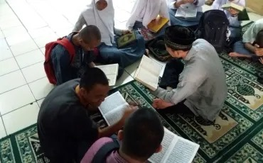
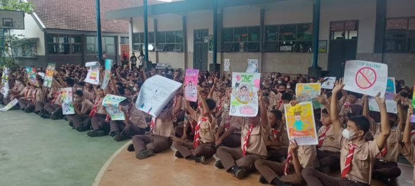

Ekstrakurikuler
Pramuka

Ekstrakurikuler Pramuka adalah salah satu kegiatan di sekolah yang bertujuan untuk mengembangkan jiwa kepemimpinan, kemandirian, keberanian, kerjasama, dan rasa cinta terhadap alam serta lingkungan. Pramuka juga mengajarkan nilai-nilai kejujuran, disiplin, tanggung jawab, dan kepedulian sosial kepada para pesertanya.
KEGIATAN :
Kegiatan-kegiatan yang dilaksanakan di ekstrakurikuler PRAMUKA SMA Plus Negeri 17 Palembang ialah
sebagai berikut:
1. Latihan Baris berbaris
2. Baris berbaris ini termasuk latihan gerak dasar yang diwujudkan untuk menanamkan Disiplin, Rasa
persatuan, Rasa tanggung jawab, Kepatuhan dalam melaksanakan perintah dengan tepat dan cepat.
3. Latihan Morse
Latihan morse ini adalah latihan untuk melatih ketelitian dan daya ingat. Latihan Morse ini menggunakan
sebuah pluit.
1. Perkemahan, Manfaatnya yaitu:
Mengagumi alam ciptaan tuhan
Mempercakap diri dalam melaksanakan ajaran-ajaran PRAMUKA
Mempraktikkan sistem kerukunan
Dapat mengenal alam dan kawan dari dekat
Kita akan menemukan hal-hal yang baru yang akan mempertebal percaya pada diri sendiri Dan masih banyak
lagi latihan latihan yang tentunya berhubungan dengan ekstrakurikuler PRAMUKA
Rohis
Rohis Nur Islami adalah suatu organisasi atau ekstrakurikuler yang bernafaskan keislaman dan merupakan
suatu wadah yang menampung minat siswa di SMA Negeri X Layo pada dunia islami. Rohis Nur Islami berdiri
pada angkatan kedua SMA Negeri X Layo atas dasar sila Ketuhanan Yang Maha Esa. Tujuannya adalah untuk
tempat menimba ilmu islam dan berbagai aspek Islam yang lain secara lebih mendalam. Pada angkatan
ketiga, Rohis Nur Islami secara resmi menjadi salah satu ekstrakurikuler yang diakui di
SMA Negeri X Layo.
KEGIATAN :
1. TADARUS AL-QURAN. Mempelajari tata cara membaca Al-Quran yang benar, dan mengkaji arti dari kandungan
Al-Quran, serta mempelajari hukum baca dan tajwidnya.
2 NASYID Kegiatan seni islam di bidang vocal khusus untuk ikhwan atau siswa laki-laki
3. DAI dan TAUSIYAH, Belajar memahami suatu materi islam yang diberikan melalui kegiatan tausyiah,
tetapi tidak hanya mendengarkan siswa juga di tuntut untuk menyampaikan suatu materi
dalam bentuk tausyiah.
4. MTQ dan SARITILAWAH, Mempelajari tata cara menerjemahkan Al-Quran dengan suara yang indah, guna
meningkatkan kreatifitas siswa di bidang seni Islam.
5. Bahasa Arab dan tajwid
6. Ligo
7. Mentoring
8. Kafa'ah
Futsal
Ekstrakurikuler futsal adalah kegiatan ekstrakurikuler di sekolah yang menawarkan kesempatan bagi siswa untuk belajar dan mengembangkan keterampilan dalam bermain futsal. Futsal adalah olahraga yang mirip dengan sepak bola, namun dimainkan dalam ruangan yang lebih kecil dan dengan jumlah pemain yang lebih sedikit.
KEGIATAN :
1. Bermain bersama antar Kelas disaat jam ekskul
2. Mengadakan turnamen antar kelas dan antar sekolah
3. Latihan bersama alumni
4. Memebentuk tim untuk mengikuti turnamen nasional
Pengumuman
Upacara Peringatan Hari Pahlawan 10 November 2023

10 November 2023
Pelaksanaan Simulasi UTBK Gelombang 1

6 November 2023
Pelaksanaan P5: Bangunlah Jiwa dan Raganya dan Gaya Hidup Berkelanjutan
1 November 2023